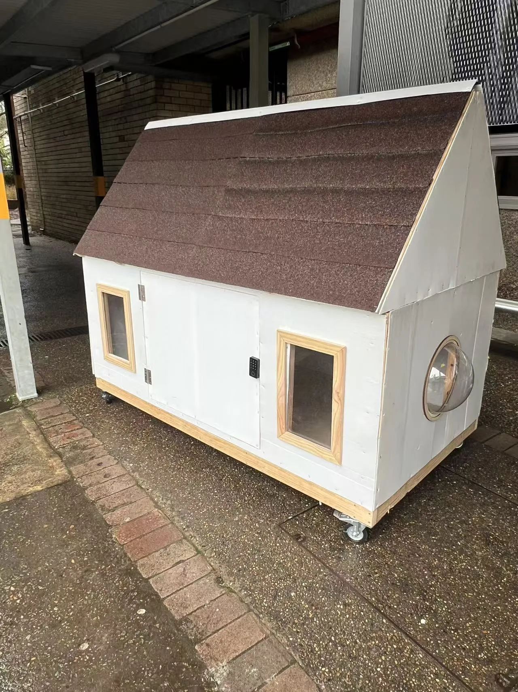
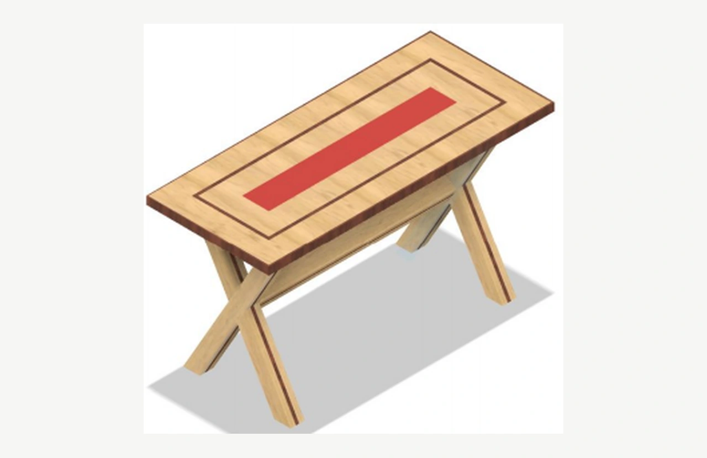
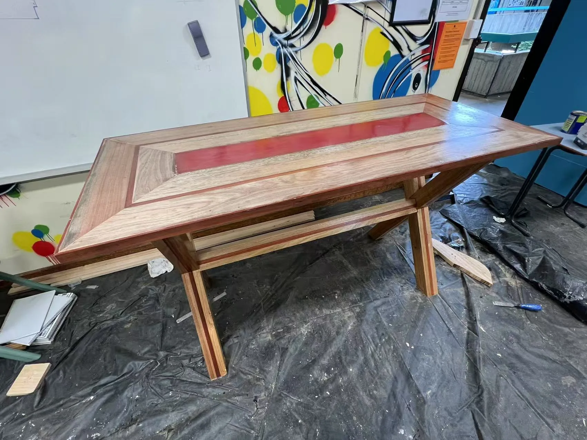

Explore the studio.
Choose a project to reveal its technical reference, colour palette and hands-on 3D assembly experience. A visitor-led way to understand the relationship between design and construction.
Two stories. Your choice.
Switch projects below; each opens a real, interactive case study with design images and movable construction parts.

Tiny Homeless Shelter
Explore a timber shelter prototype and its modular construction.
Investigate the form.
Move around a reconstructed 3D object to see the structure from different angles.
Reveal the layers.
Separate the principal parts of the object and discover their relationships.
Try the assembly.
Drag individual modules into place or use precise snap controls to complete the challenge.
Look beyond the screen.
Every digital reconstruction is paired with photographs, technical drawings, or original sketches. Models are interpretive visualisations—not structural certification or measured CAD deliverables.


